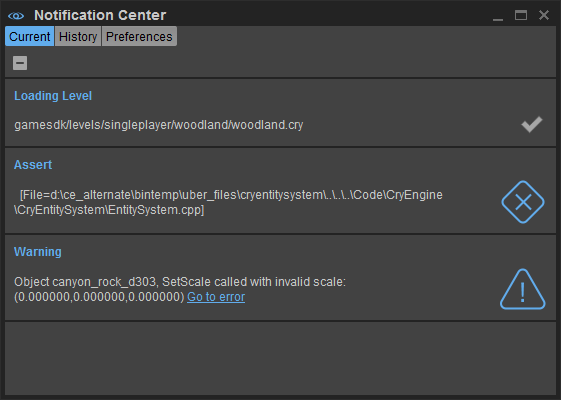

The notification center is one of the preferred places to present the user with errors, warnings or any other useful information.

Please restrain yourself from using modal dialogs when trying to let a user know that something went wrong.
Warnings and Errors
To show a new error or warning notification it's as easy as using CryWarning to log out what went wrong. You can also embed commands in the form of links in these messages, these commands will be executed if the user clicks the added Go to error link at the end of the notification message.
Here's an example on how to embed a command with your message:
CryWarning(VALIDATOR_MODULE_EDITOR, VALIDATOR_WARNING, "An object has misbehaved in the Sandbox %s", CryLinkService::CCryLinkUriFactory::GetUriV("Editor", "general.select_and_go_to_object %s", obj->GetName())); |
This will execute a command to focus and select the object that has misbehaved.
Log Other Useful Info
Due to the amount of spam that is currently displayed as normal log messages, it's not as simple as logging info other than warnings and errors using CryWarning. Instead, you must get a handle to the notification center and log info as follows:
GetIEditor()->GetNotificationCenter()->ShowInfo("title", "message"); |
Progress
// CProgressNotification spawns a progress notification widget. the lifetime of the widget is tied to the lifetime// of this notification. Example usage:ThreadingUtils::Async([taskCount](){ // Spawns progress notification CProgressNotification notification("My Title", "My Message", true); for (int n = 0; n < taskCount; ++n) { // Execute n-th task here and update progress bar float progress = static_cast<float>(n) / taskCount; notification.SetProgress(progress); } // Notification is hidden when CProgressNotification goes out of scope}); |